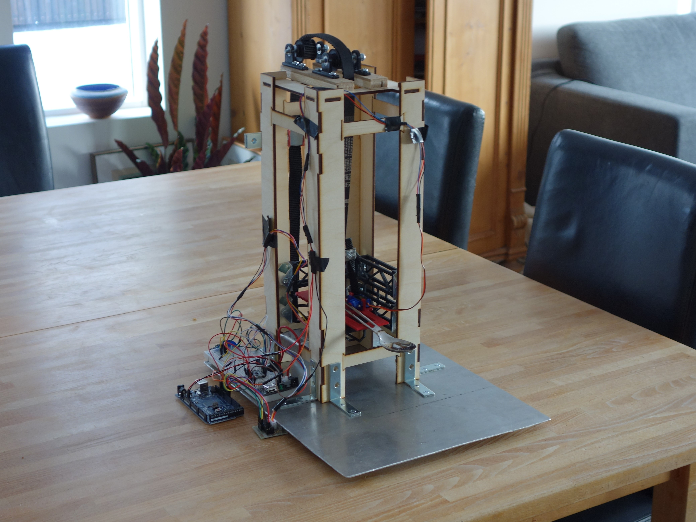
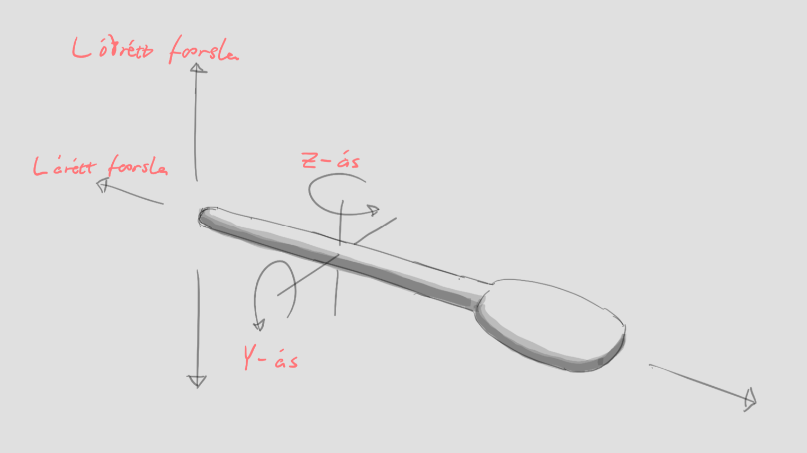
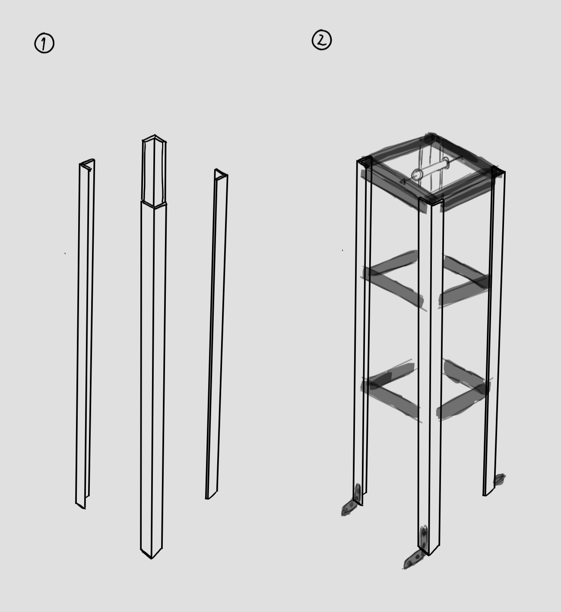
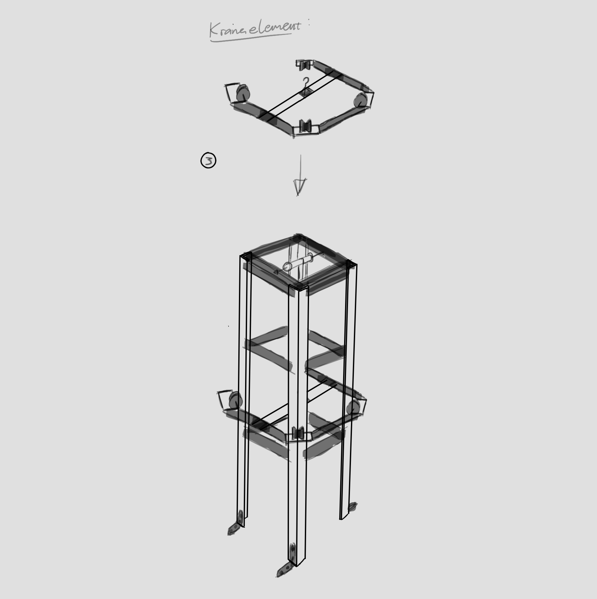
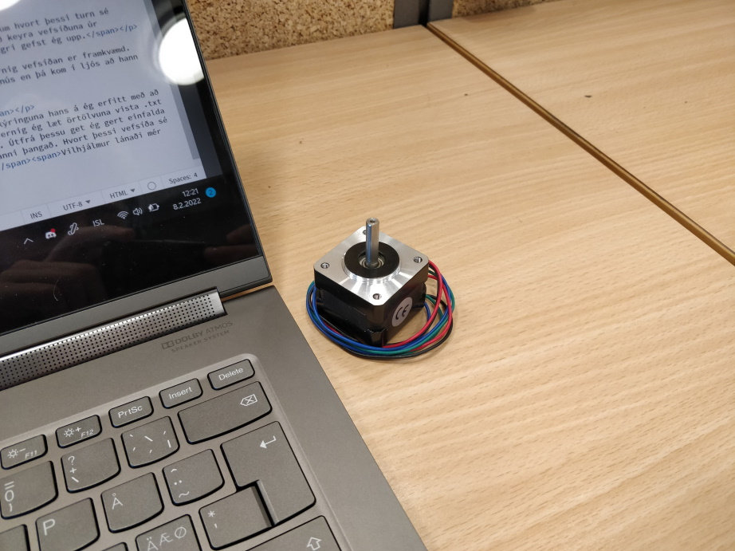
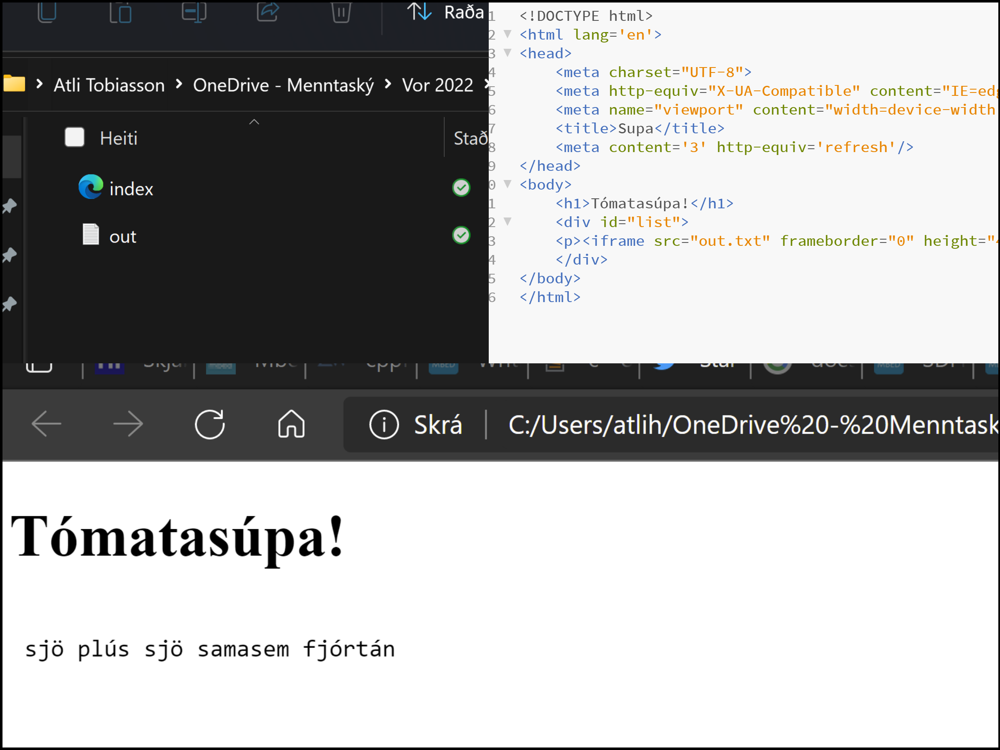
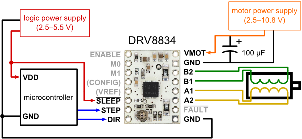

Verkefni 2 í tölvustýrðum vélbúnaði. Þetta er dagbókin um gerð á vélmenni sem fóðrar notenda súpu.

Við erum þriggja manna hópur. Ég, ritari þessarar dagbókar, heiti Atli Tobiasson Helmer en með mér eru þeir Finnur Mauritz Einarsson og Þórhallur Tryggvason. Dagbókin er skipt í kafla og eru kaflaskilin einfaldlega dagsetningarnar þegar unnið var í verkefninu.
1.2.2022Ég (Atli) er núna ekki enn kominn með hóp en það ætti að leysast á næstu dögum. Fyrsta skrefið er að ákvarða hvernig skeiðin mun hreyfast frá skál og að munni notenda. Líklegast er best að hafa fjórar frelsisgráður. Ein til að færa skeiðina upp og niður, ein til að færa hana fram og aftur, ein til að halla henni eftir láréttum ás upp og niður (svo hún geti tekið súpu úr skálinni) og sem snýst eftir lóðréttum ás þannig hún beinist að notenda.

Eftir miklar vangaveltur hef ég ákveðið að hanna turn sem hefur kranaelement. Þessi krani er festur við braut turnsins og færist upp og niður með kaðli (líkt og í lyftum) en mótorinn er neðst í turninum. Kosturinn hérna er sá að búnaðurinn þarf ekki að vera mjög flókinn í smíðina á þessu.

Kranaelementið umlykur svo turninn á eftirfarandi máta:

2.2.2022Nú sendi ég hugmyndirnar á Magnús Þór Jónsson kennara námskeiðsins til að fá staðfestingu um hvort þessi turn sé raunhæfur. Ég byrja svo að huga að vefsíðuhluta verkefnisins. Fyrir mér er óljóst hvort við séum að keyra vefsíðuna úr örtölvunni og hvernig hún á að vera aðgengileg. Eftir nokkra klukkutíma af vafasömum google-leiðangri gefst ég upp.
5.2.2022Magnús hefur ekki enn svarað en nú sendi ég á Vilhjálm Ívar Sigurjónsson og spyr um hvernig vefsíðan er framkvæmd. Þetta er þáttur verkefnisins sem mig langar að sé mjög skýr. Vilhjálmur áframsendi póstinn á Magnús en þá kom í ljós að hann er í útlöndum sem útskýrir að hann svaraði ekki upphaflega.
7.2.2022Ég og Vilhjálmur mælum okkur mót um að hittast næsta dag til að ræða vefsíðumálin
8.2.2022Vilhjálmur útskýrir að vefsíðan er mun einfaldari en ég hafði ímyndað mér. Eftir útskýringuna hans á ég erfitt með að skilja afhverju mér fannst þetta svona ruglandi.Fyrst skal ég finna út úr því hvernig ég læt örtölvuna vista .txt skrár inn á fartölvuna mína og í framhaldi vista ofan á þær aftur á einhverju tímabilsfresti. Útfrá þessu get ég gert einfalda HTML síðu með þá eiginleika að hún endurhleður sig á sama tímabilsfresti og varpar .txt skránni þangað. Hvort þessi vefsíða sé einungis aðgengileg úr minni tölvu, háskólanetinu eða bara hvar sem er er okkar eigið val.Vilhjálmur lánaði mér einnig stepper mótor sem við ætlum að læra á.

10.2.2022Ég eyddi kvöldinu í að finna hvernig maður skrifar .txt skjöl sjálfvirkt úr teraterm. Ég fann skjöl eins og FATFileSystem.lib en þau eru hugsuð fyrir geymsluminni sem er á örtölvunni, ekki í minni eigin PC-tölvu. Eftir nokkra klukkutíma leiðangur gefst ég upp. Á morgun hef ég aðeins tvo valkosti, hafa samband við kennarana eða skipta um örtölvu.
11.2.2022Ákvörðunin er að sækja hjálp frá kennurum og vinna í öðru á meðan ég bíð eftir svari. Ástæðan er sú að mig langar að halda mig við örtölvuna sem við fengum lánaða þar sem hægt er að afla upplýsingasafnið í kringum hana og þá er einnig léttara að skilja kóða hjá öðrum hópum (sem nota hana).Ég mun bara nýta mér næsta fyrirlestur námskeiðsins (þriðjudaginn) til að fá þetta á hreint. Vefsíðan sjálf virkar og getur lesið .txt skjöl. Eini þátturinn sem vantar er að örtölvan skrifi yfir þetta .txt skjal.

Það vill svo heppilega til að ég á Mega 2560 Procjet sem inniheldur marga nauðsynlega íhluti í þetta verkefni, þar á meðal brauðbretti, víra og alls kyns skynjara.Mótorinn sem ég fékk lánaðan heitir Nema 14 frá Pololu og á vefsíðu hans er hægt að finna alls kyns upplýsingar um hvernig á að beita honum
13.2.2022Markmiðið í dag er að virkja þennan mótor (Nema 14). Til þess nota ég ákveðna stjórnstöð fyrir mótorinn sem þarf að tengja á eftifarandi hátt:
